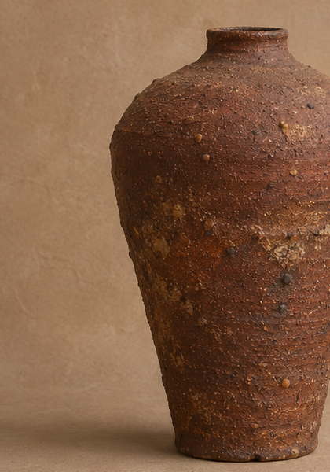
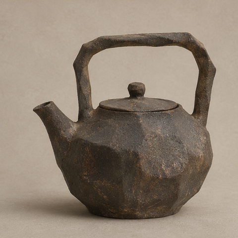

Celadon bowl
Pale glaze over a wide, shallow form.
CLAY ARCHIVE
Three studio objects trace the shapes and finishes that come out of a small kiln.
Pale glaze over a wide, shallow form.

Tall reddish clay with a narrow lip.

Dark glaze and an angular handle.